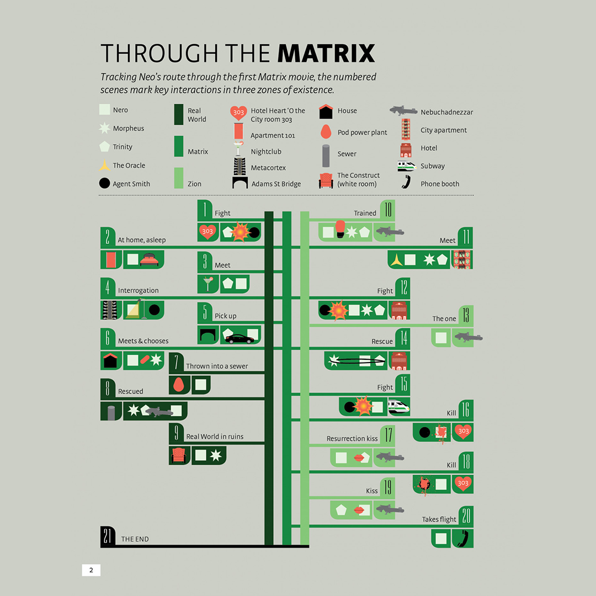

On the left side, I have an infographic taken from visual.ly, the infographic depicts Neo's journey through the first film's key events. I like this illustration because it is such a condensed version of the first movie's story events. The visualization, however, I believe fails in terms of operating in a clear and concise manner, because upon first glance it does not effectively communicate the information it is trying to relay. At least, for someone who is not familar or is a nerd about the movie and it's general plot. The illustration, is a bit clunky and the visuals are slightly all over the place, even for me who is an avid fan of the film and knows the plot the infographic is extremely incoherent and confusing. I use this example, though, because I think as far as visualizations for the movie go this was one of the better ones.
Data Visualization Planning

This visualization however is one of the absolute best ones I came across, essentially it is a mind map that is centered on Neo, the main character of the Matrix films, which radiates outwards demonstrating Neo's relationships from the most important and intimate to the least important and distant.
The illustration is very in-depth, in that it is able to display all the interconnectedness of the characters within the movies.

Another interesting aspect of this illustration is how it also catalogues the characters closeness with Neo by colors.
For example, in the depiction, Neo is the biggest bubble (Light orange) while Trinity (Neo's love interest) and Morpheus (Neo's mentor) are depicted as Dark Orange bubbles closely related to Neo.
One interesting aspect I was unable to take a screenshot of was how the relative paths of the characters connect to each other based on the color of the relation.
This visualization however is one of the absolute best ones I came across, essentially it is a mind map that is centered on Neo, the main character of the Matrix films, which radiates outwards demonstrating Neo's relationships from the most important and intimate to the least important and distant. The illustration is very in-depth, in that it is able to display all the interconnectedness of the characters within the movies.
Another interesting aspect of this illustration is how it also catalogues the characters closeness with Neo by colors. For example, in the depiction, Neo is the biggest bubble (Light orange) while Trinity (Neo's love interest) and Morpheus (Neo's mentor) are depicted as Dark Orange bubbles closely related to Neo. One interesting aspect I was unable to take a screenshot of was how the relative paths of the characters connect to each other based on the color of the relation.